The text data presents the description of 125 clinical trials coming from 4 different bacterial infection conditions, cirrhosis, sepsis, covid and meningococcal.
The dataset has 2 columns, one is label and another is the text. This dataset is a subset of collected data in Data Gathering part.
The text data are transformed into matrix of token counts.
Orignial text data
Matrix of token counts
2) WordCloud of Text Data
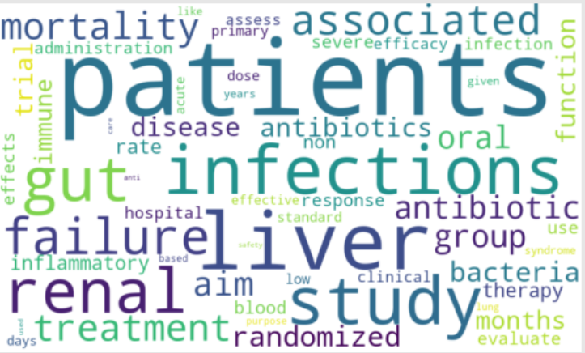
Fig.1 - WordCloud of label cirrhosis
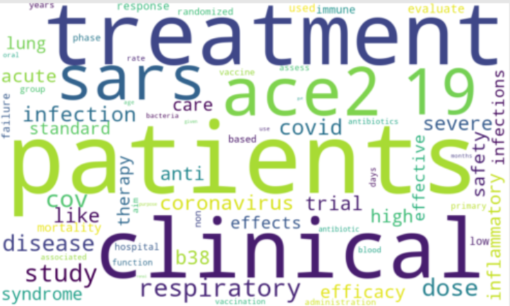
Fig.2 - WordCloud of label covid
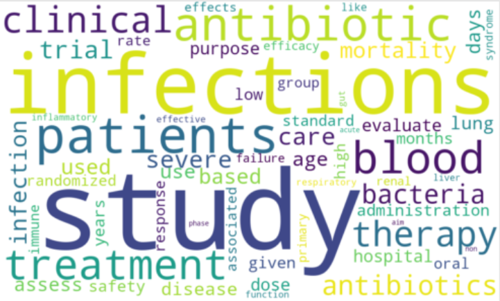
Fig.3 - WordCloud of label sepsis
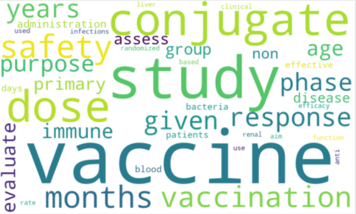
Fig.4 - WordCloud of label meningococcal
3) Decision Trees of Text Data
Three trees are created with different parameter values. The first tree has criterion of entropy and the best split. The second tree is set on criterion of Gini and best splitter.
And the third one has the criteria gini, random splitter and max depth of 5. Since the third tree has the limit on max depth, it has smaller size than other 2.
The first two trees presents all pure child nodes. What is more, the first tree and the second tree share a common root node vaccine. The word liver appears in high level in all these three trees. It clearly distinguish covid from other three labels.
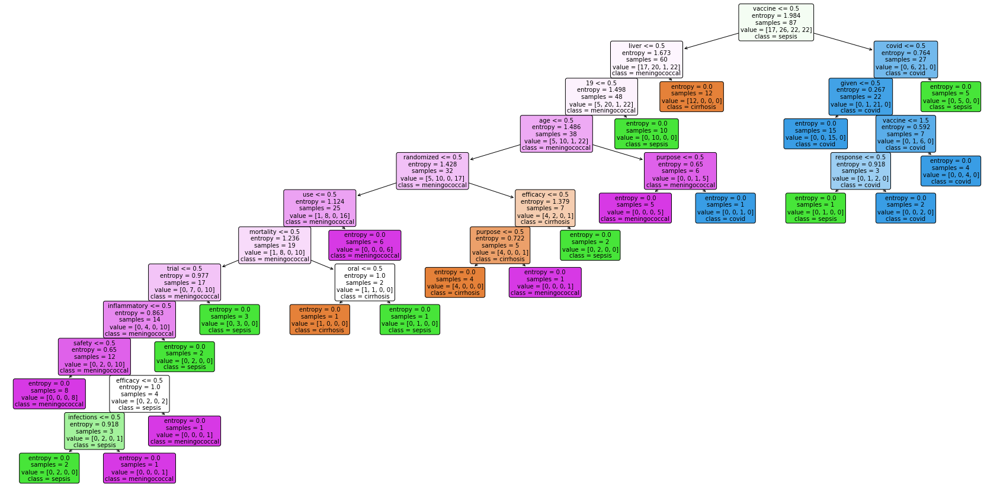
Fig.5 - first decision tree of text data
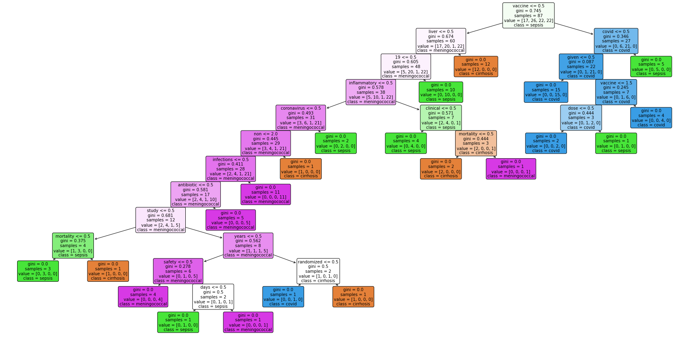
Fig.6 - second Decision tree of text data
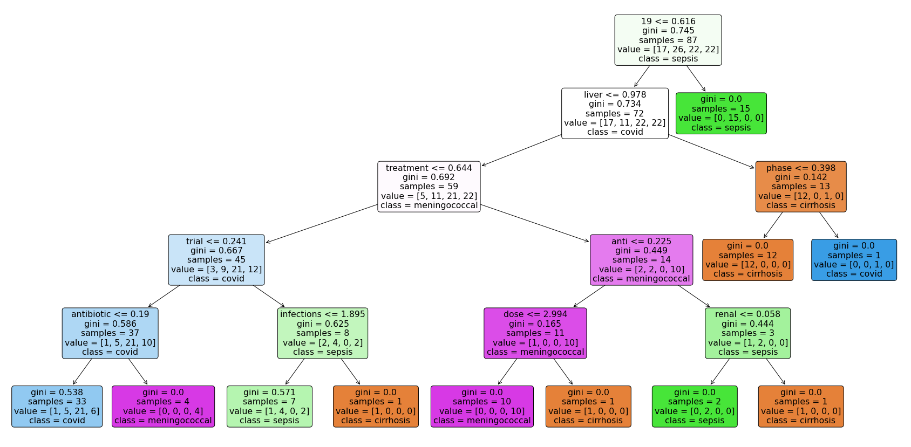
Fig.7 - third decision tree of text data
Each tree has its own confusion matrix. Generally, all three trees has good prediction on label cirrhosis and label covid, while relatively poor on sepsis and least on meningococcal.
Fig.8 - confusion matrix of first text data decison tree Fig.9 - confusion matrix of second text data decison tree Fig.10 - confusion matrix of third text data decison tree
Record Data
1) Record data description
The record dataset shows the record of 400 clinical trials, which has 200 trials labelled as Completed and another 200 trials labelled as Terminated. This dataset is a sample taken from the gathered and cleaned data earlier in this project, and has eight attributes.
It has mixed quantitative and qualitative data.
Record dataset
2) Decision Trees of Record Data
According to the ranks of the importance of attributes from the code, the key feature is the enrolment count of the trial, and the second important one is age groups of participants. Other attributes weigh way lower importance.
The first tree includes all 8 attributes in training, which gives the most accurate prediction among these three trees, though it do not have high accuray. The second tree is built based on the column of Design Intervention Model and the primary purpose of designing, which have low importance weight.
Thus, this tree has the lowest accuracy.
The third tree is built on the attributes enrolment count and age groups, which are the 2 most important factors. It has a slightly lower accuracy than the first tree.
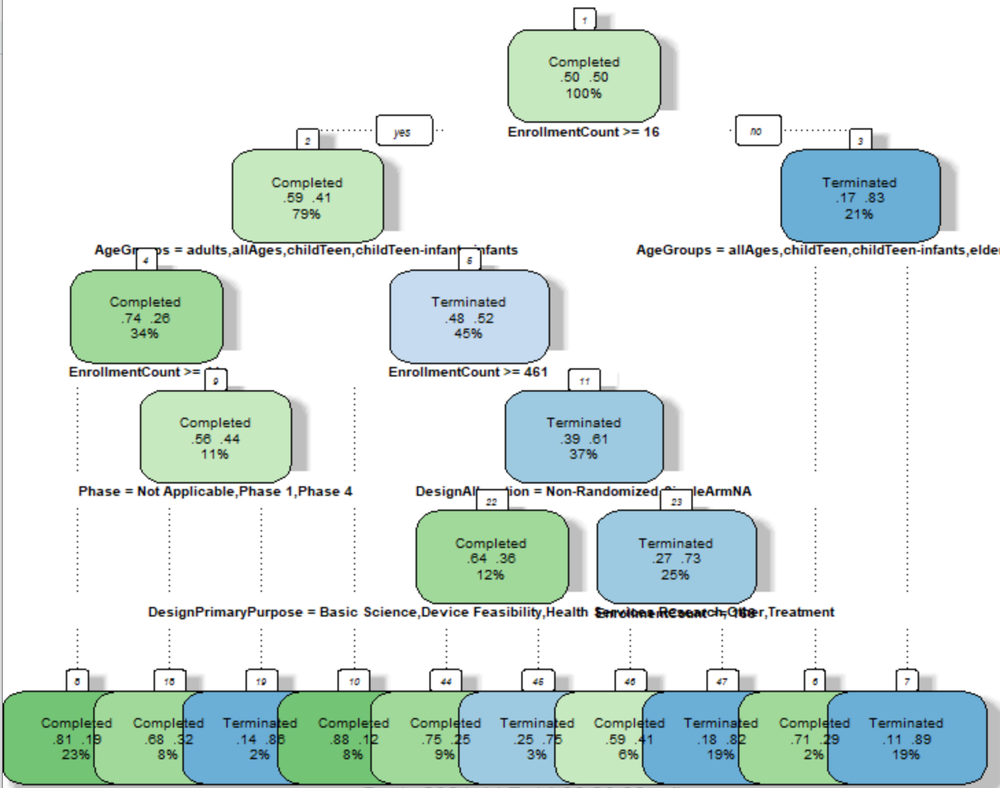
Fig.11 - first Decision tree of record data
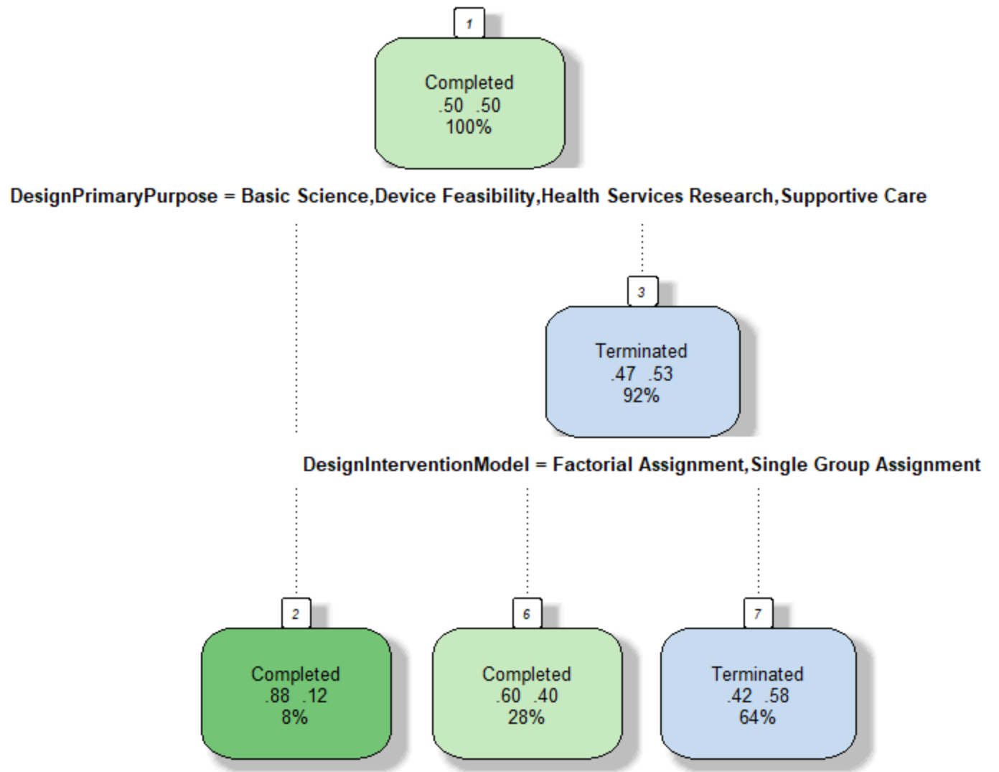
Fig.12 - second Decision tree of record data
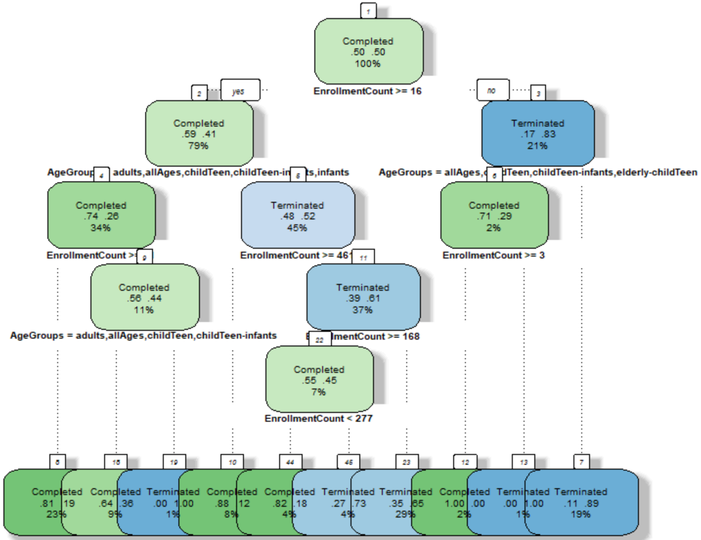
Fig.13 - third Decision tree of record data
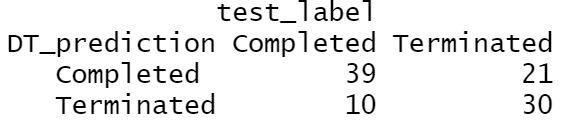
Fig.14 - confusion matrix of first record data decison tree
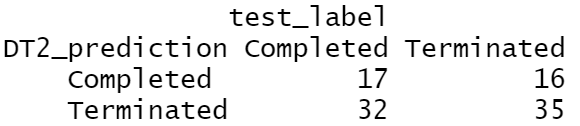
Fig.15 - confusion matrix of second record data decison tree
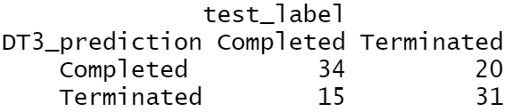
Fig.16 - confusion matrix of third record data decison tree
Discussion
Generally, the decision tree built for text data is a good model for predicting the clinical trials of cirrhosis, covid and sepsis based on their description.
Word liver clearly distinguish covid from other three labels, since covid is more about a localized respiratory condition, while other three conditions are systemic conditions, involving with whole body blood circulation which closely related to liver.
What is more, cirrhosis is a type of liver infection.
From the created Wordcloud, it is also interesting to observe that the vaccine is not a frequent word in description of covid-19 trials, instead, the words like treatment or words related to virus occurs more frequently, which suggests that many clinical trials on covid-19 are focusing on anti-viral treatment. Sepsis is a type of blood infection.
The WordCloud for sepsis shows the frequent words antibiotic, blood, infections and etc. , which suggests that antibiotics are one of the major focus on this field. What is more, lots of clinical trials on meningococcal are investigating the vaccine.
The decision tree built for record data are capable of predicting whether the clinical trial will complete or terminate based on the attributes of the trial, though its accuracy is median.